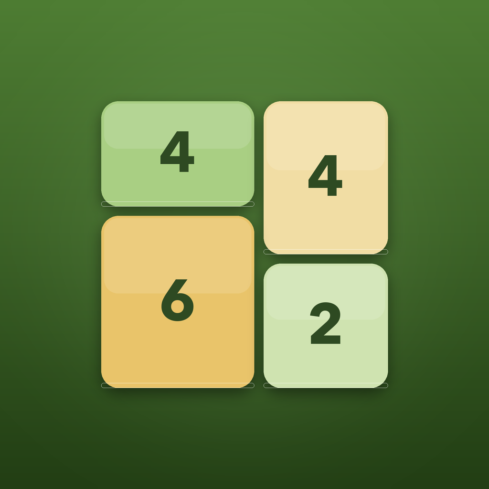

Support
Shikaku Garden
Divide the grid into rectangles. Each rectangle must stay inside the board, contain exactly one clue, and cover the number of cells shown by that clue. Solve eight original boards with tap-to-select corners, undo, restart, unlocked progression, and local saves. There is no timer.
Get help
Email hi@mosselora.com with your device model and what happened. We read every message.
Your progress
Progress is saved on your device only. Deleting the app removes it; there is no cloud backup.